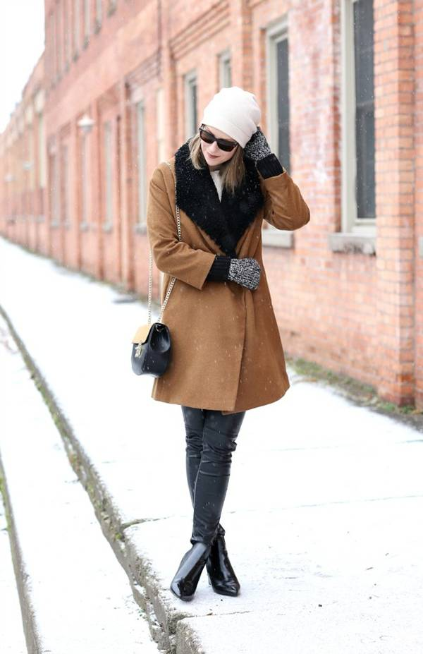
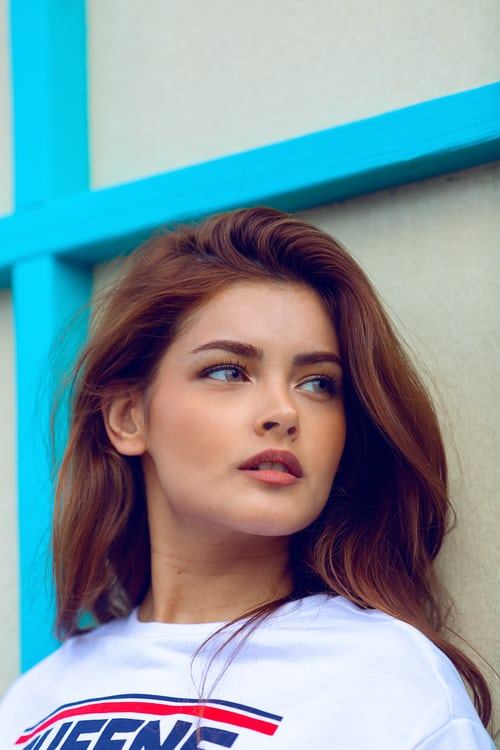

LONDON FASHION

The power of a great outfit is impossible to overstate.
At its best,fashion has the ability to transform your mood, identity,
and, of course, your look.It can be fun, refreshing, and purposeful.
NEWYORK FASHION

You have a closet full of clothes but not a single thing to wear,
perhaps you just need some inspiration. We looked to some of the
most iconic designers and couturiers for their thoughts on dressing in style.
PARIS FASHION

Fashion is a form of self-expression and autonomy at a
particular period and place and in a specific context, of clothing
FASHION DESIGN

The term implies a look defined by the fashion industry as that which is trending.
WOMENS FASHION

Fashion design is the art of applying design, aesthetics, clothing construction and natural beauty to clothing
SPRING FASHION

Fashion designers are responsible for creating looks for individual garments,
involving shape, color, fabric, trimming, and more.
Fashion designers play a major role in our world.
STREET FASHION

Designers conduct research on fashion trends and interpret them for their audience.
Their specific designs are used by manufacturers.
WINTER FASHION

Fashion designers attempt to design clothes which are functional
as well as aesthetically pleasing. They consider who is likely
to wear a garment and the situations in which it will be worn,
and they work within a wide range of materials, colors, patterns and styles.
RETRO FASHION

Today, most clothing is designed for the mass market,
especially casual and every-day wear are called ready to wear.
HIPSTER FASHION
Ready-to-wear has a rather different
place in the spheres of fashion and classic clothing.
FASHION AND BEAUTY

In the fashion industry, designers produce ready-to-wear clothing,
intended to be worn without significant alteration because clothing
made to standard sizes fits most people.
WEDDING FASHION

Some fashion houses and fashion designers
make mass-produced and industrially manufactured ready-to-wear lines,
NORWAY FASHION
In the early 19th century, women's fashion was highly ornate and dependent on a precise fit,
so ready-to-wear garments for women did not become widely available until the beginning of the 20th century.
INDIAN FASHION
Women would alter their previously styled clothing in order to stay
up to date with fashion trends. Women with larger incomes purchased new,
fully tailored clothing in current styles while middle-class and
lower-class women adjusted their clothing to fit changes in fashion
by adding new neck collars, shortening skirts,
AMERIKANSK FASHION
The demand for affordable and fashionable women's clothing sparked designers
and department stores to manufacture clothing in bulk quantities that were
accessible to women of all classes and incomes.
INDONESHIA FASHION

In high-end fashion, ready-to-wear collections are usually
presented by fashion houses each season during a period known as Fashion Week.
BLOGPOST 17
ITALY FASHION
London Fashion Week is a clothing trade show that takes
place in London twice a year, in February and September.
MALDIWAS FASHION
A fashion week is a fashion industry event, lasting approximately one week,
where fashion designers, brands or "houses" display their latest collections
in runway fashion shows to buyers and the media
ENGLAND FASHION
The most prominent fashion weeks are held in the fashion capitals of the world;
Paris, Milan, London and New York, or the "Big Four" which receive the majority of press coverage..
RUSSIA FASHION
In almost all fashion shows world wide celebrities notoriously have meltdowns,
which steals the show from the fashion itself. These displays are now famously
known as "show stealers".